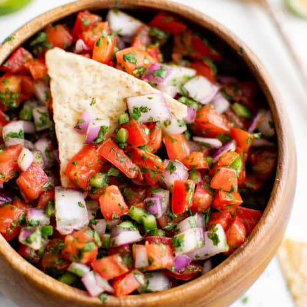

Pico de Gallo (Fresh Salsa)

Description
This fresh salsa recipe is made with chopped tomatoes, chili peppers, red onion, cilantro, and lime.
Ingredients
- 2-3 medium sized tomatoes
- 1/2 red onion
- 2 serrano or 1 jalapeno pepper, stems and seeds removed
- Juice of 1 lime
- 1/2 cup chopped cilantro
- Salt and pepper to taste
- Pinch dried oregano (crumble in your fingers before adding), or more to taste
- Pinch ground cumin, or more to taste
Steps
- Roughly chop the tomatoes, chili peppers, and onions. Set aside some of the seeds from the peppers. If the salsa isn't hot enough, you can add a few for more heat.
- Place all the ingredients in the bowl of a food processor fitted with a blade. Pulse only a few times, just enough to finely dice the ingredients. If you don't have a food processor, you can finely dice by hand.
- Place in a serving bowl. Add salt and pepper to taste. Mix in cumin and oregano, adding more if needed.
- Serve with chips, tortillas, tacos, burritos, tostadas or quesadillas.